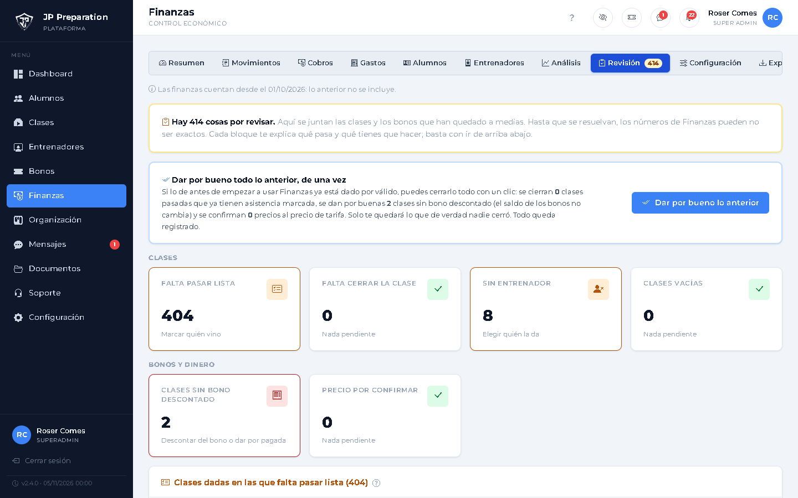
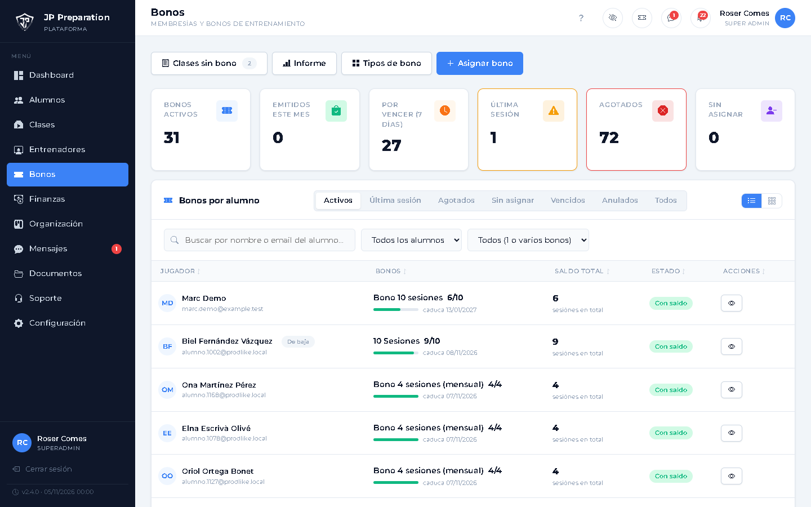
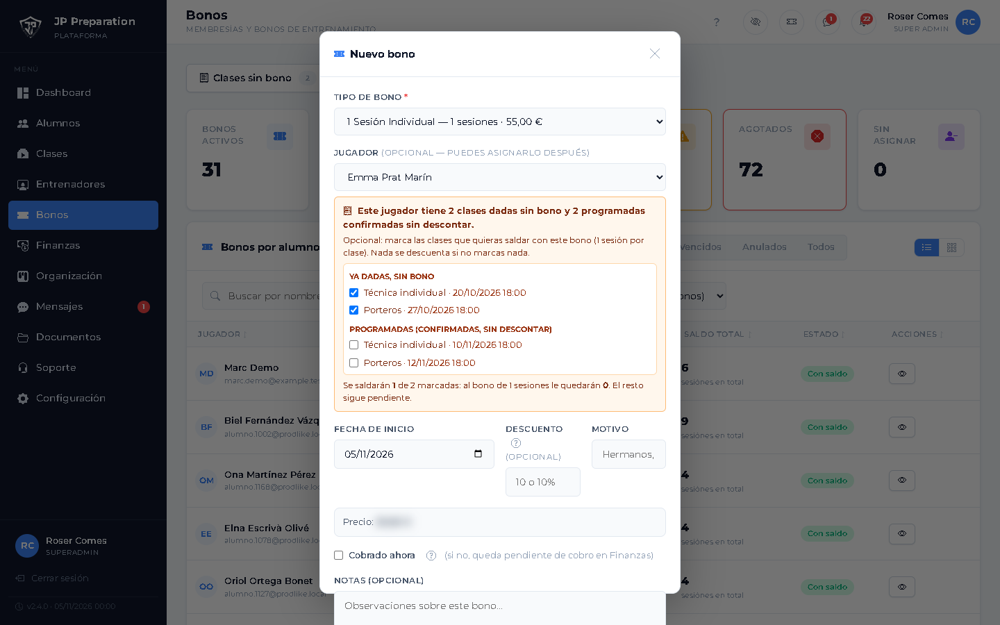
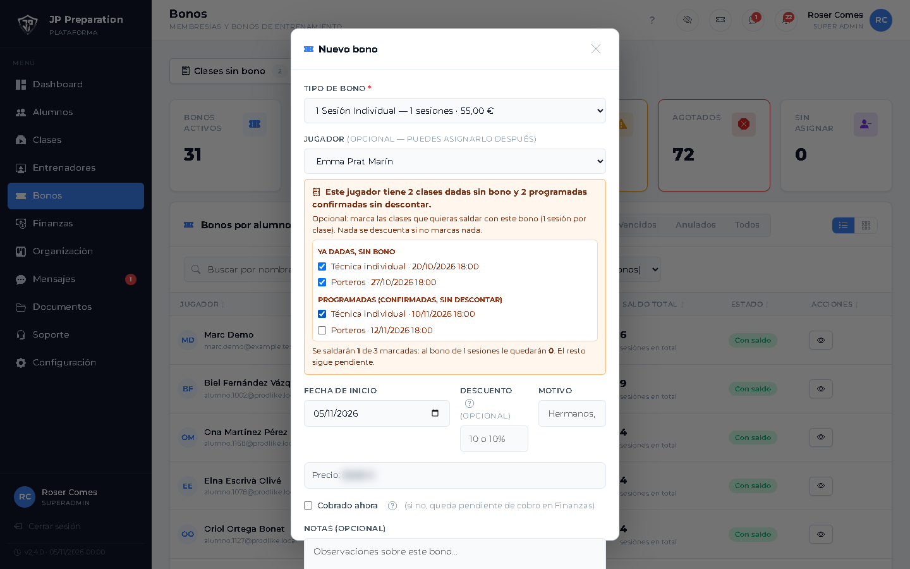

Saldar clases al dar un bono
Cuando el alumno ya vino (o está apuntado) sin tener bono
El problema
Clases dadas sin bono
Si un alumno viene sin tener bono con saldo, la clase queda pendiente en Revisión hasta que se le da uno.
Paso 2 de 6
Entra en Bonos › Asignar bono
Es el mismo paso de siempre para dar un bono.
Paso 3 de 6
Elige tipo y alumno
Si el alumno tiene clases pendientes, aparece un recuadro naranja con casillas.
Paso 4 de 6
Dos grupos de clases
Ya dadas, sin bono (vienen marcadas) y programadas confirmadas sin descontar (sin marcar), pasadas de fecha o no.
Paso 5 de 6
Marca las que quieras
Abajo ves el resumen: cuántas se saldan y cuántas sesiones le quedarán al bono.
Paso 6 de 6
Pulsa Crear bono y saldar
Se gasta 1 sesión por clase, de la más antigua a la más reciente. Si no marcas ninguna, no se descuenta nada.






Clases sin bono
Asignar bono
Alumno
Clases pendientes
Marca las que quieras
Resumen
Crear bono y saldar
Clases saldadas
Las que no marques siguen pendientes · todo se puede devolver